当输入 webpack 输入指令 npm run dev 后会自动启动一个浏览器
需要借鉴插件 open-browser-webpack-plugin
下载：npm install open-browser-webpack-plugin
我们做一个小案例实现的功能有：
启动热键，会自动弹出浏览器窗口
改变浏览器端口
打包css文件
打包json文件
打包img(图片)文件
实现es6
首先下载webpack 和webpack -dev-servaer 轻量级服务器
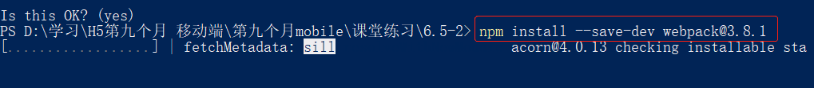
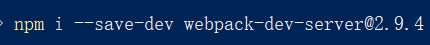
在下载启动热键自动打开浏览器窗口的插件：
npm i open-drowser-webpack-plugin：没有版本号 因为这个插件是两年以前的
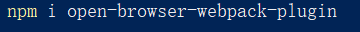
这些文件都是开发环境下的，并且可以在 package.json 这个文件夹看到
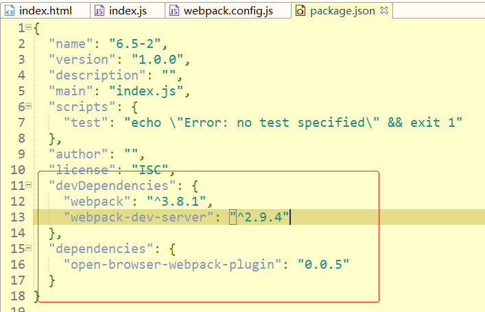
下面开始配置文件
文件名必须是 webpack.config.js
Path 获取当前绝对路径
Path.resolve 将路径或路径片段的序列解析为绝对路径
Dirname 当前绝对路径
DevServer 配置服务
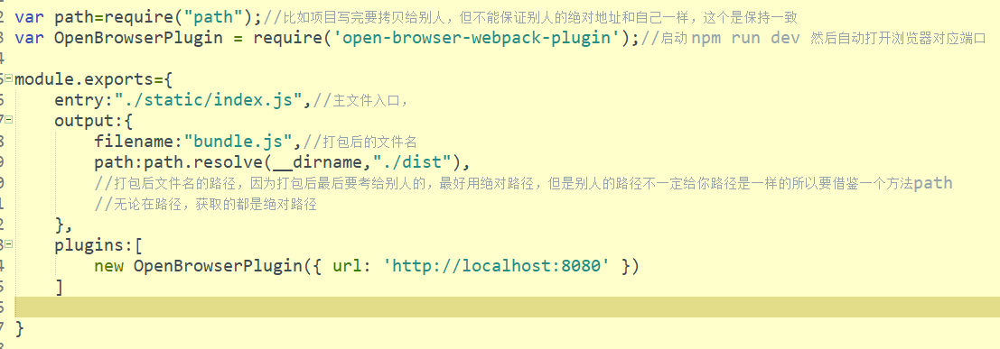
var path=require("path");//比如项目写完要拷贝给别人，但不能保证别人的绝对地址和自己一样，这个是保持一致
var OpenBrowserPlugin = require('open-browser-webpack-plugin');//启动 npm run dev 然后自动打开浏览器对应端口
module.exports={
entry:"./static/index.js",//主文件入口，
output:{
filename:"bundle.js",//打包后的文件名
path:path.resolve(__dirname,"./dist"),
//打包后文件名的路径，因为打包后最后要考给别人的，最好用绝对路径，但是别人的路径不一定给你路径是一样的所以要借鉴一个方法path
//无论在路径，获取的都是绝对路径
},
plugins:[
new OpenBrowserPlugin({ url: 'http://localhost:8080' })
]
}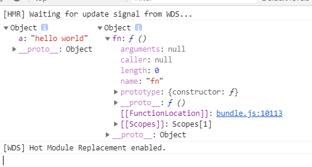
在自动启动服务器时候 webpack-dev-server 把当前目录当作根目录
如果你的8080端口已经被占了，怎么改其它端口
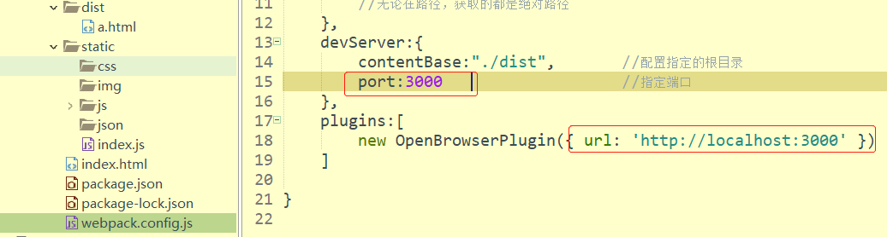
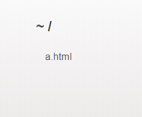
打包css文件
首先下载 style-loader css-loader 这两个文件
下载：npm i --save-dev style-loader css-loader
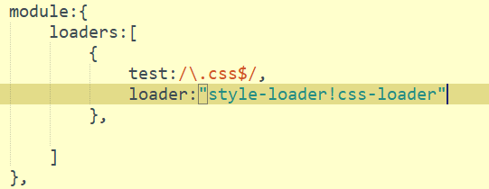
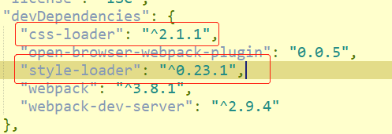
打包json文件
如何解析json
因为可以json是js文件所以可以直接编译json，但也要解析
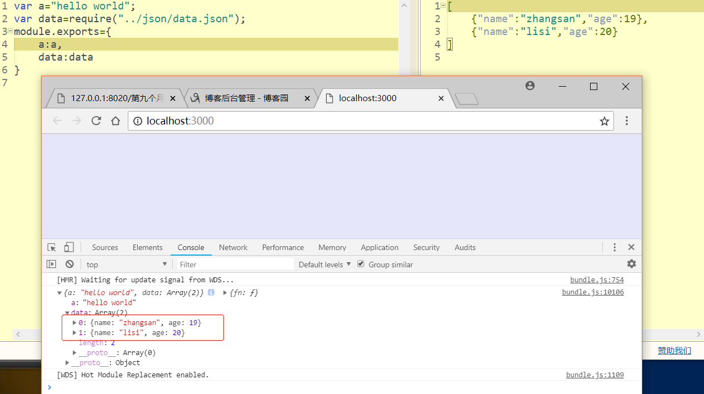
下载：npm i --save-dev json-loader
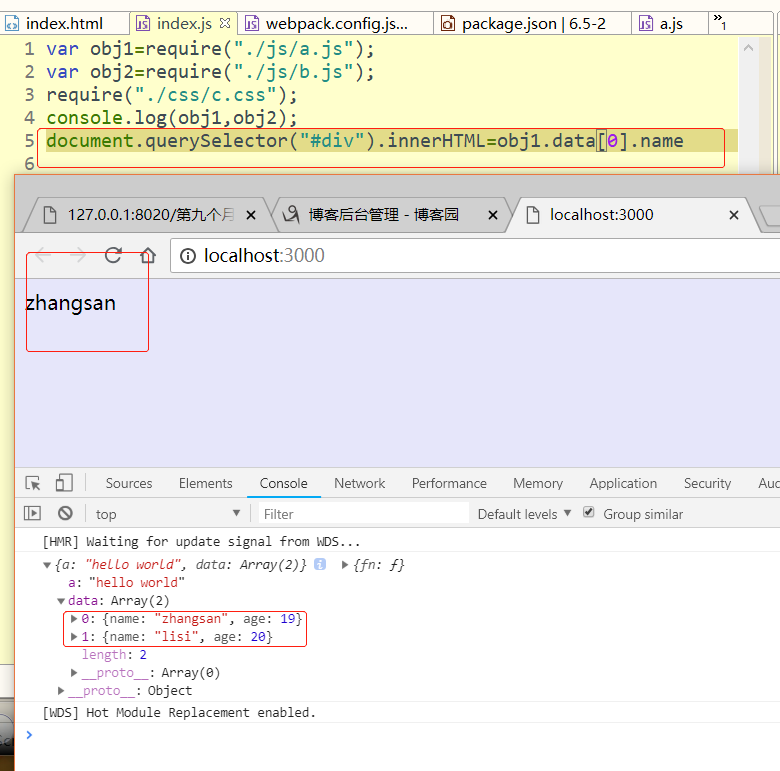
打包img文件
下载：两种下载方法
npm i --save-dev url-loader
Npm I --save-dev file-loader 这个是改文件名的
我们使用的图片最大是8kb
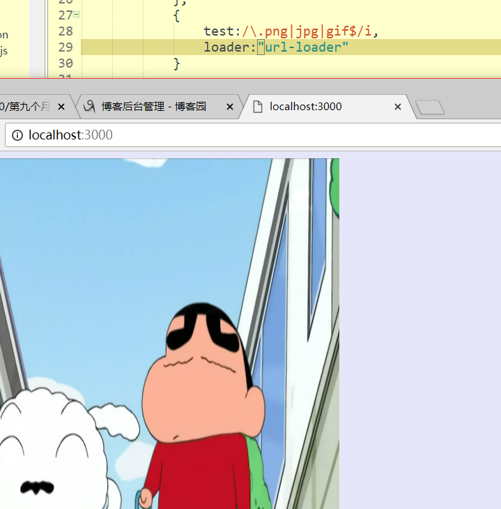
处理es6 js文件
需要学习 babel 这个babel模块 专门将es6语法解析成es5的格式
npm i --save-dev babel-loader @babel/core @babel/preset webpack
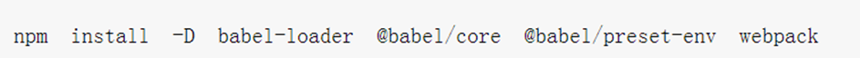
es6写法：
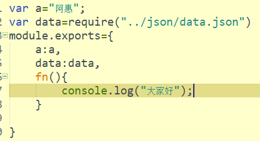
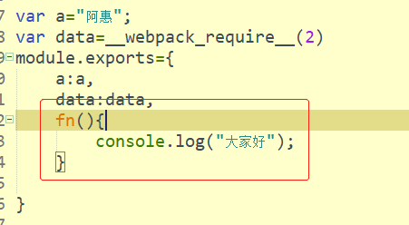
然后咱们通过下载包把es6转换为es5，可以看到咱们用这个依靠包成功把打包后的文件转换成了es5了。
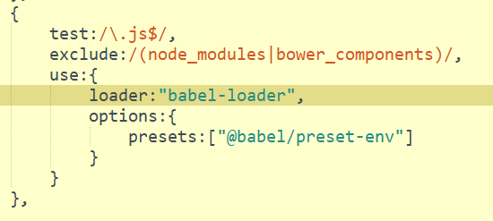
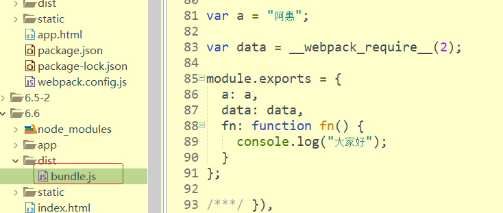
作者：晋飞翔
手机号(微信同步)：17812718961